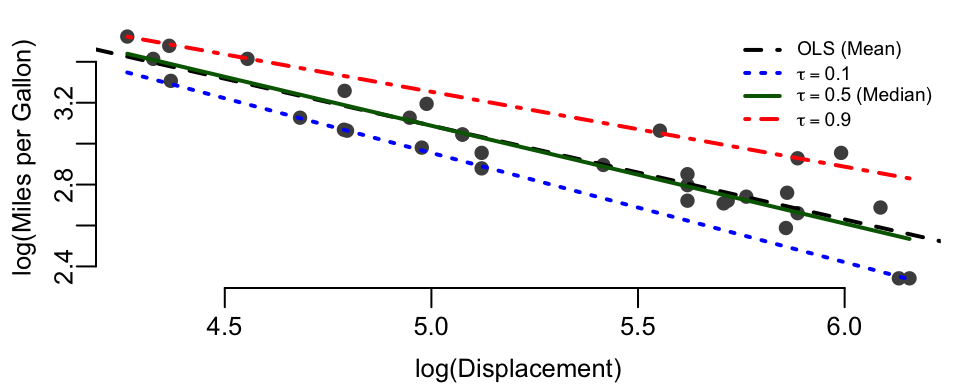
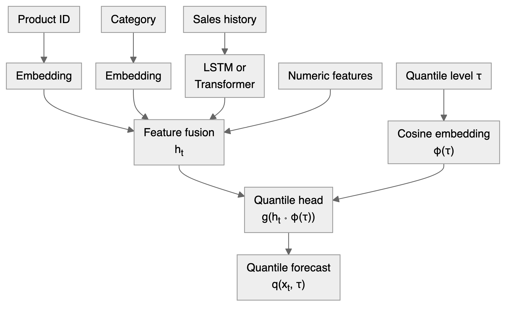
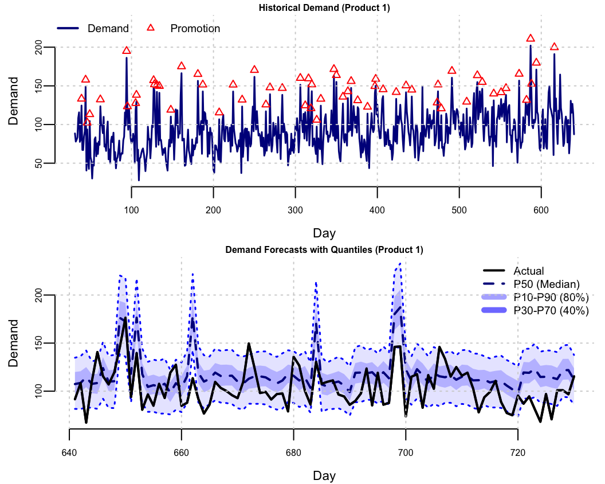
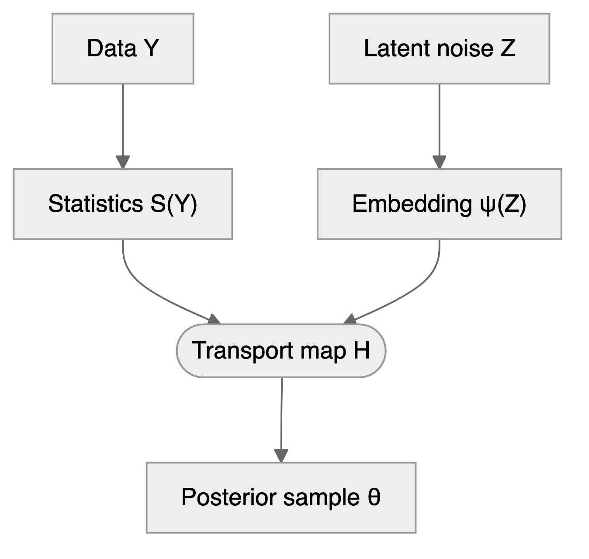
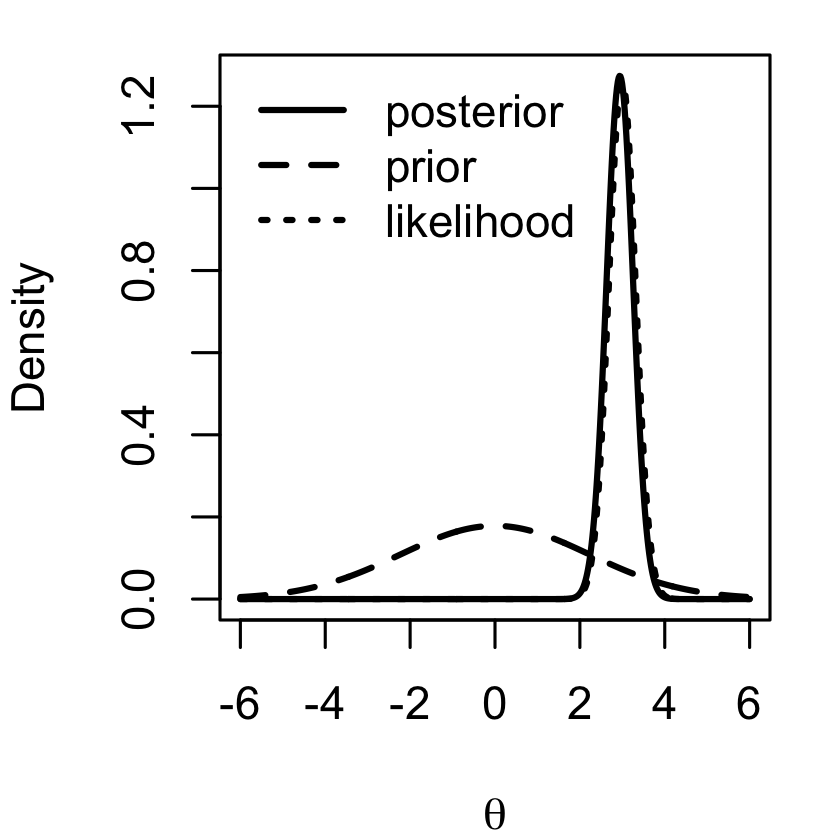
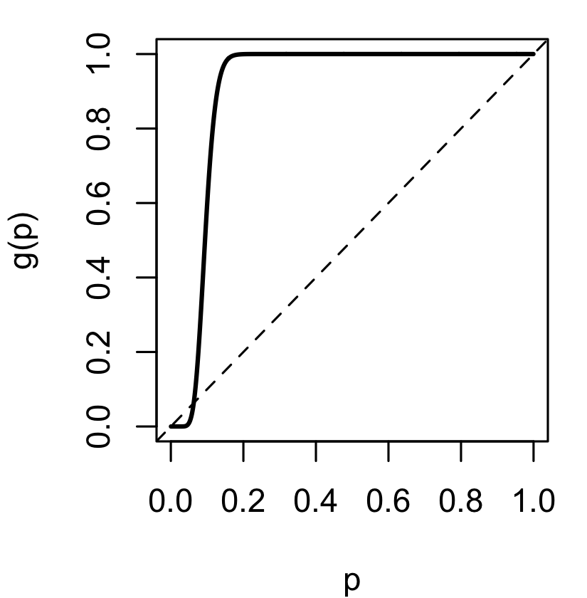
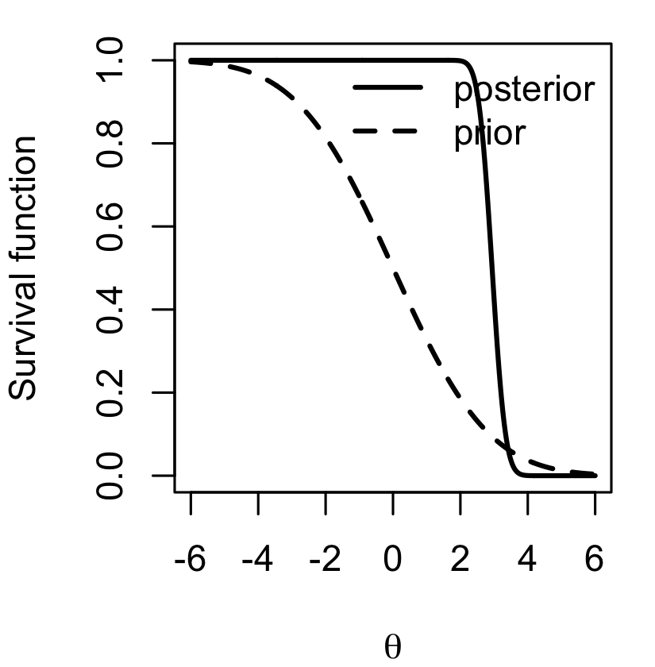
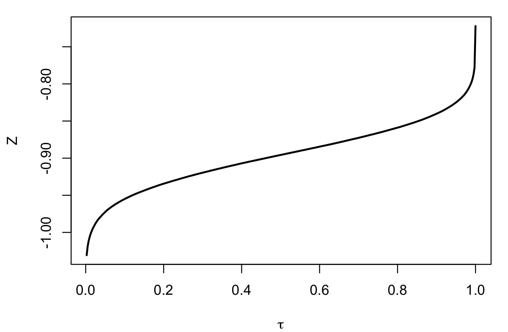
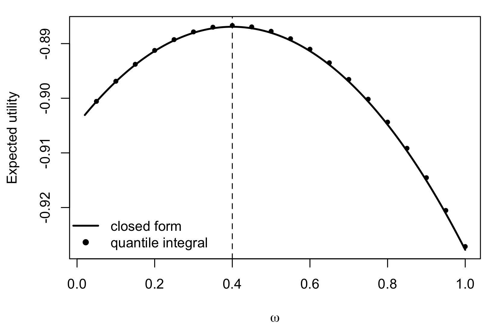
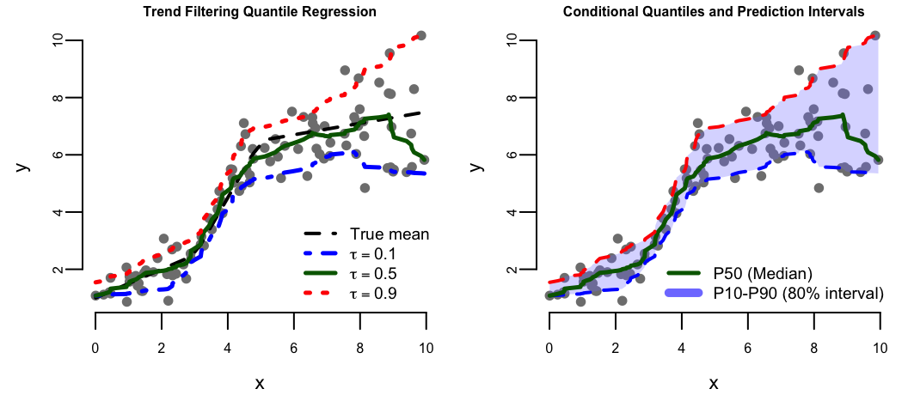

# Define the check loss (pinball loss) function
check_loss <- function(u, tau) {
# rho_tau(u) = u * (tau - I(u < 0))
u * (tau - (u < 0))
}
# Objective function: sum of check losses for quantile regression
quantile_objective <- function(beta, X, y, tau) {
y_pred <- X %*% beta
residuals <- y - y_pred
sum(check_loss(residuals, tau))
}
# Prepare data
X <- cbind(1, log(mtcars$disp)) # Design matrix with intercept
y <- log(mtcars$mpg)21 Quantile Neural Networks
“It is better to be roughly right than precisely wrong.” (John Maynard Keynes)
With the architecture (Chapter 18) and training algorithms (Chapter 20) of neural networks in hand, we now apply them to a problem at the intersection of Bayesian inference and decision theory.
In Chapter 3, we explored how to learn posterior distributions \(p(\theta\mid y)\) using Bayesian learning and to use it for predictions, hypothesis testing, and other tasks. In Chapter 4, we explored how rational agents make decisions under uncertainty by maximizing expected utility. Traditional Bayesian approaches to such problems require computing posterior distributions \(p(\theta\mid y)\), which in turn requires specifying likelihood functions \(p(y\mid \theta)\) and often involves challenging posterior estimation.1 But what if we could bypass density estimation entirely and directly learn the quantities we need for decision-making and other tasks?
This chapter introduces quantile neural networks, which learn posterior distributions through their quantile functions rather than their densities. This shift from densities to quantiles enables likelihood-free inference, provides direct connections to decision theory through the quantile-expectation identity, and scales to high-dimensional problems where density estimation becomes intractable.
The key insight is straightforward. Any expectation, including the expected utility central to decision theory, can be represented as an integral over quantiles: \[ \E{f(\theta)\mid y} = \int_0^1 F^{-1}_{f(\theta) \mid y}(\tau) d\tau \] Rather than learning densities and then computing expectations via sampling, we can directly learn the quantile function \(F^{-1}_{f(\theta) \mid y}(\tau)\) using neural networks. This approach is not only more efficient but also naturally handles simulation-based models where likelihoods are unavailable or computationally expensive.2
We begin with quantile regression (Section 21.1) and neural network implementation (Section 21.2), then use demand forecasts for an inventory decision. Posterior and utility quantiles extend the same learning objective to Bayesian inference and decision theory. Quantile trend filtering and distributional reinforcement learning follow as further comparisons.
21.1 Quantile Regression
A retailer must choose tomorrow’s stock before observing demand \(D\). Under a single-period model with no fixed ordering cost or capacity constraint, let \(c_u\) be the cost per unit of unmet demand and \(c_o\) the cost per unit left over. Writing \(v^+ = \max(v,0)\), the expected cost is \[ C(q) = \E{c_u(D-q)^+ + c_o(q-D)^+} = (c_u+c_o)\E{\rho_\tau(D-q)}, \qquad \tau = \frac{c_u}{c_u+c_o}. \] Here \(\rho_\tau\) is the check loss defined below. If a shortage costs nine times as much as a leftover, the optimal stock level is the 90th percentile of demand. The asymmetric costs determine the statistical target.
For observed values \(y_1, \ldots, y_n\), a sample median minimizes the sum of absolute deviations: \[ m \in \arg\min_q \frac{1}{n} \sum_{i=1}^n |y_i-q|. \] A population median similarly minimizes \(\E{|Y-q|}\), assuming a finite first moment. At least half the probability lies on each side of a median.
The median is the special case \(\tau = 0.5\), but the same principle generalizes to any quantile \(\tau \in (0,1)\). We use a generalization of the absolute value function, the check loss or pinball loss (Koenker and Bassett 1978), to find the minimizer: \[ q_\tau = \arg\min_q \frac{1}{n} \sum_{i=1}^n \rho_\tau(y_i - q). \] Here \(\rho_\tau(u)\) is the check loss, defined as: \[ \rho_\tau(u) = u(\tau - I(u < 0)) = \begin{cases} \tau u & \text{if } u \geq 0 \\ (\tau - 1) u & \text{if } u < 0 \end{cases} \] For a continuous conditional distribution, differentiating the population risk gives \[ \frac{\partial}{\partial q} \E{\rho_\tau(Y-q)\mid X=x} = F_{Y\mid X=x}(q)-\tau. \] The derivative is negative below the requested quantile and positive above it. For discrete demand, the corresponding subgradient condition is \(F(q^-)\leq\tau\leq F(q)\). Thus minimizing check loss selects a conditional quantile, including the stock level required by the cost ratio.
Example 21.1 (Linear Quantile Regression) To illustrate quantile regression, we analyze engine displacement and fuel efficiency in mtcars. Alongside the mean relationship from ordinary least squares, we estimate conditional quantiles on the log-log scale (Figure 21.1).
We minimize this objective with optim (BFGS, started at the least squares fit) separately for \(\tau = 0.1, 0.5, 0.9\), and compare the three fitted lines with ordinary least squares on the log-log scale.

Table 21.1 shows the estimated coefficients.
| Model | Intercept | Slope |
|---|---|---|
| Quantile tau = 0.1 | 5.6246 | -0.5340 |
| Quantile tau = 0.5 | 5.4783 | -0.4781 |
| Quantile tau = 0.9 | 5.0835 | -0.3660 |
| OLS (Mean) | 5.3810 | -0.4586 |
The slopes differ across quantiles: the 10th percentile slope is -0.5340, while the 90th percentile slope is -0.3660. The fitted negative relationship is stronger at the lower quantile, so the gap between the fitted quantiles widens with displacement. These data do not identify the causes of that spread.
Unlike squared-error loss, absolute loss does not give increasingly large residuals increasingly large slopes. Median regression is therefore less sensitive to extreme response values than OLS, although unusual predictor values can still have substantial influence.
Finally, the check loss \(\rho_\tau(u)\) is piecewise linear, making it non-differentiable at zero. BFGS assumes a smooth objective, so it is not guaranteed to reach the minimum here, and in this example optim stops slightly short of it: the slopes are within 0.01 of those of the linear programming algorithm of quantreg::rq, the standard way to fit quantile regression (Koenker 2005).
Linear quantile regression restricts each quantile to a linear predictor. Neural quantile regression replaces that predictor with a learned nonlinear function and can share features across quantiles. The loss continues to identify the same statistical target.
21.2 Neural Network Implementation
A conditional quantile network \(q_{\varphi}(x,\tau)\) receives the observed features \(x\) and a quantile level \(\tau\in(0,1)\), and predicts \(F^{-1}_{Y\mid X=x}(\tau)\). Here \(\varphi\) denotes network weights, distinct from Bayesian model parameters \(\theta\). Given training pairs \((x_i,y_i)\) and levels \(\tau_1,\ldots,\tau_K\), minimize pure averaged pinball loss: \[ L(\varphi) = \frac{1}{NK}\sum_{i=1}^N\sum_{k=1}^K \rho_{\tau_k}\big(y_i-q_{\varphi}(x_i,\tau_k)\big). \] Alternatively, draw independent uniform levels during training. At each fixed \((x,\tau)\), the population loss is minimized by the conditional quantile, as the derivative above shows. An independently drawn \(\tau\) specifies which quantile to estimate; it does not turn an observed \(y_i\) into that quantile.
A mini-batch update makes the learning mechanism explicit. Sample a batch \(B\) of observed pairs and draw \(\tau_i\sim U(0,1)\) independently for each pair. With step size \(\eta\), take a stochastic subgradient update: \[ \varphi \leftarrow \varphi-\eta\,\partial_{\varphi}\left[\frac{1}{|B|}\sum_{i\in B}\rho_{\tau_i}\big(y_i-q_{\varphi}(x_i,\tau_i)\big)\right]. \] No MSE term is needed to identify quantiles. Adding squared error to the same output generally shifts its population minimizer away from the requested quantile; a conditional median need not equal a conditional mean. A separate mean output could share features, but would estimate a different target.
Rather than training separate networks for each \(\tau_k\), one network takes \(\tau\) as an input and shares features across levels. It can also be evaluated at untrained levels. Neither sharing nor interpolation guarantees accuracy or prevents quantile crossing.
Cosine Embedding for \(\tau\)
One architectural choice is to concatenate \(\tau\) with the other inputs. Another is a cosine embedding, used by Dabney et al. (2018): \[ F^{-1}(\tau,x) \approx q_{\varphi}(x,\tau) = g(\psi(x)\circ\phi(\tau)), \] where \(\circ\) is element-wise multiplication, \(g\) and \(\psi\) are feed-forward networks, and \[ \phi_j(\tau) = \mathrm{ReLU}\left(\sum_{i=0}^{n-1}\cos(\pi i\tau)w_{ij}+b_j\right), \qquad j=1,\ldots,m. \] The scalar \(\tau\) becomes an \(m\)-dimensional vector using \(n\) cosine frequencies. This branch depends only on \(\tau\); the feature branch \(\psi(x)\) supplies the conditioning information. Sharing these branches across quantiles can reduce parameter counts relative to separate networks.
The cosine basis motivates the embedding, but does not guarantee smooth or monotone quantiles. Discrete outcomes can have discontinuous quantile functions, and ReLU introduces kinks. Barron (1993) gives \(O(N^{-1/2})\) approximation rates for networks with \(N\) sigmoidal units under a finite first Fourier-moment condition; that result is not a rate for this cosine embedding.
Non-Crossing Constraints
A valid quantile function satisfies \(F^{-1}(\tau_i)\leq F^{-1}(\tau_j)\) when \(\tau_i<\tau_j\). Unconstrained networks can violate this ordering. Remedies include penalties on crossings, architectures constrained to be non-decreasing in \(\tau\), and rearrangement of predictions after fitting (Chernozhukov, Fernández-Val, and Galichon 2010; Cannon 2018). Monotone activation functions alone do not guarantee a monotone network: the weights and how \(\tau\) enters must also be constrained.
These are possible safeguards, rather than procedures used by every example below. The reproducible neural comparison uses no crossing penalty or rearrangement, so ordering must be checked separately.
Synthetic Data Example
Consider synthetic data generated from the model: \[ x\sim U(-1,1),\qquad y\mid x\sim N\left(\frac{\sin(\pi x)}{\pi x},\frac{\exp(1-x)}{10}\right). \] The variance increases as \(x\) decreases. Write \(\operatorname{sinc}(x)=\sin(\pi x)/(\pi x)\), with \(\operatorname{sinc}(0)=1\) by continuity. The true conditional quantile is \[ f_\tau(x)=\operatorname{sinc}(x)+\Phi^{-1}(\tau)\sqrt{\frac{\exp(1-x)}{10}}. \] An implicit network learns a function of both \(x\) and \(\tau\). An explicit approach fits separate outputs at selected levels, illustrated here at \(\tau\in\{0.05,0.5,0.95\}\).

For an inspectable comparison on the same model, the computing exercise “Cosine Embeddings for the Quantile Level” supplies the full training code (the computing exercises appear in the HTML edition and in the notebooks of exercises/). It generates 400 pairs with seed 7. The implicit network has eight cosine frequencies, embedding dimension six, a \(1\to6\) tanh feature network, and a linear readout. Nine explicit networks each use a \(1\to6\) tanh feature layer and linear readout. Both minimize summed pinball loss at \(\tau=0.1,0.2,\ldots,0.9\) using optim with L-BFGS-B and maxit = 300; the explicit initializations use seed 11. Quantile levels are fixed in this comparison, rather than sampled randomly.
| Network | Parameters | Quantile MAE |
|---|---|---|
| Implicit | 73 | 0.081 |
| Explicit with interpolation | 171 | 0.078 |
The implicit network answers directly at the untrained level 0.37; the explicit approach linearly interpolates its 0.3 and 0.4 fits. The errors in Table 21.2 are similar, with the explicit interpolation slightly better in this run. Sharing uses fewer parameters here, but establishes neither an accuracy advantage nor calibration across all levels. This experiment is separate from the illustration in Figure 21.2.
Quantiles and Wasserstein Distance
For scalar distributions with finite first moments, the 1-Wasserstein distance is \[ W_1(P_U,P_V)=\int_0^1\left|F_U^{-1}(\tau)-F_V^{-1}(\tau)\right|d\tau. \] It can be computed from order statistics (Levina and Bickel 2001). Matching every target quantile makes this distance zero. This is the population-target connection used in Exercise 21.4, rather than an identity between empirical pinball loss and \(W_1\). In a restricted neural family, minimizing one need not minimize the other. For an equal-weight approximation by \(K\) point masses, the \(W_1\)-optimal locations are the target quantiles at \((2k-1)/(2K)\), \(k=1,\ldots,K\) (Dabney et al. 2017).
Wasserstein GANs use this distributional distance because it can distinguish disjoint supports (Arjovsky, Chintala, and Bottou 2017). That motivation does not make arbitrary quantile-network training equivalent to GAN training or guarantee its stability.
21.3 Supply Chain Forecasting at Scale
Large retailers must choose stock levels for many products and locations. Too little inventory leads to stockouts and lost sales; too much ties up capital and risks obsolescence. We return to the asymmetric inventory choice that motivated check loss.
For the single-period costs defined in Section 21.1, the optimal stock target is \(F^{-1}_{D\mid x}(c_u/(c_u+c_o))\). Here \(P_k\) (written Pk in the figures) is the \(k\)th percentile of demand. P50 is optimal only when the unit costs are equal. P90 corresponds to a shortage cost nine times the overage cost; it is a demand level, whereas safety stock usually means inventory above an expected-demand baseline over a specified replenishment period. Capacity planning can also use a high quantile, with the level determined by the relevant costs or service constraint.
For a high-margin item with \(c_u/c_o\) between \(7/3\) and \(4\), the optimal policy may target \(P_{70}\) or \(P_{80}\). For perishable goods with \(c_u/c_o\) between \(3/7\) and \(2/3\), target \(P_{30}\) or \(P_{40}\). These are cost-based examples, not fixed rules for product categories (Exercise 21.6).
DeepAR (Salinas, Flunkert, and Gasthaus 2019) is a recurrent probabilistic forecasting model that predicts parameters of a chosen distribution, such as a Gaussian or negative binomial, from related time series. Quantiles can be obtained analytically where available or by sampling. The multi-horizon quantile recurrent forecaster of Wen et al. (2017) directly predicts demand quantiles at several horizons using check loss. Chronos-2 (Ansari et al. 2025) extends pretrained forecasting to univariate, multivariate, and covariate-informed tasks.
Direct quantile prediction accommodates asymmetric costs without choosing a parametric response family. It can represent zero-demand quantiles, although intermittent demand still requires adequate data and a suitable model. Linear growth of the loss limits the influence of extreme response residuals; promotional effects still need predictors. Feature choices and network restrictions remain modeling assumptions.
Demand Forecasting Setup
Consider forecasting demand \(y_t\) for a product given the features in Table 21.3:
| Feature Category | Examples | Purpose |
|---|---|---|
| Temporal features | Day of week, month, holiday indicators, days since launch | Capture seasonal patterns and product lifecycle |
| Lagged demand | \(y_{t-1}, y_{t-7}, y_{t-28}\) (yesterday, last week, last month) | Incorporate recent demand history and autocorrelation |
| Product features | Category, price, promotional flags | Account for product-specific characteristics |
| External covariates | Weather, events, competitor prices | Include external factors affecting demand |
The model predicts conditional quantiles: \[ q_\tau(t) = F^{-1}_{Y_t \mid X_t}(\tau) \]
where \(X_t\) contains information available when the forecast is issued. Training pairs \((y_t,x_t)\) may be pooled across products.
A Possible Neural Architecture
Product embeddings can share information across related items, while recurrent or attention layers encode history and its interactions with numerical features. Such sharing may help products with little history when their relationships transfer. One possible architecture uses the same two branches as Section 21.2.

In Figure 21.3, the branch \(\phi(\tau)\), a cosine embedding as in Section 21.2, receives only \(\tau\), independently of feature fusion. Training can sample products and historical forecast origins in mini-batches and minimize averaged pinball loss.
An Instructional Linear Baseline
The following simulation uses three products over two years. It includes positive trends, weekly and monthly seasonality, promotions on approximately 10% of days, and noise whose standard deviation grows with demand. The promotional increments range from 50 to 90 units. These patterns are stipulated by the simulator.
Five linear quantile regressions are fitted separately at \(\tau\in\{0.1,0.3,0.5,0.7,0.9\}\), using product identifier, day, promotion, numerical day-of-week and day-of-month features, and 1-, 7-, and 30-day demand lags. Training covers days 31 to 640. The final 90 days are evaluated as rolling one-step forecasts: each day uses demand observed through the preceding day, including realized test-period lags, and assumes that day’s promotion is known before forecasting. The fitted coefficients remain fixed. These are not 90-day-ahead forecasts issued together on day 640.

The held-out results are mixed. The P10-P90 interval has 79.6% coverage against a nominal 80%, while P30-P70 has 33.7% against 40%. The median forecast has mean absolute error 21.94 units. One near-nominal aggregate coverage rate does not establish calibration across quantiles, products, or promotional conditions.
| Quantile level | Fraction of test demand below the fitted quantile |
|---|---|
| P10 | 10.0% |
| P30 | 33.7% |
| P50 | 48.1% |
| P70 | 67.4% |
| P90 | 89.6% |
The central levels in Table 21.4 help locate the narrower interval’s undercoverage. Aggregation can hide product-specific errors: the 80% coverage is 74.4%, 84.4% and 80.0% for the three products. Calibration should also be checked by product and promotion status. Coverage measures how often observations fall inside an interval, while width measures its sharpness. A wide interval can cover well without being useful.
The top panel of Figure 21.4 shows Product 1’s training demand and promotions. The bottom fan chart shows rolling forecasts: P50 is dashed, and the bands span P10-P90 and P30-P70. For an illustrative decision, suppose shortages cost nine times leftovers. The first test-day P90 forecast for Product 1 is about 135 units, giving a stock target of about 135 under the single-period assumptions. A whole-unit implementation and stock already on hand require corresponding adjustments. The undercoverage checks matter because an inaccurate P90 can change the intended service level and cost.
21.4 From Densities to Quantiles: A Generative Approach
The same network can estimate a scalar posterior quantile. Generate a look-up table of simulated pairs \(\{\theta^{(i)},y^{(i)}\}_{i=1}^N\) by drawing \(\theta^{(i)}\sim\pi(\theta)\) and then \(y^{(i)}\sim p(y\mid\theta^{(i)})\). The latter step needs a simulator, not an evaluable likelihood. A deterministic forward map is also possible. Polson and Sokolov (2023) develops this approach to Bayesian computation.
Squared-error regression of \(\theta\) on \(Y\), whether by kernel smoothing, nearest neighbors, or a neural network, targets the conditional mean \(\E{\theta\mid Y}\). This point estimate discards spread and shape, including multimodality. Here \(\theta\) may represent a parameter or a latent state. To estimate scalar posterior quantiles, replace the response in our training objective by \(\theta\) and the features by \(S(Y)\): \[ \mathcal{R}(\varphi)=\E[\theta,Y,\tau]{\rho_\tau\big(\theta-q_{\varphi}(S(Y),\tau)\big)},\qquad \tau\sim U(0,1),\quad \tau\perp(\theta,Y). \] The joint expectation uses the prior and simulator. At each \((S(y),\tau)\), its population minimizer is the corresponding conditional quantile. If \(S\) is sufficient, this is a quantile of \(\theta\mid Y=y\); otherwise it is a quantile of \(\theta\mid S(Y)=S(y)\), which may discard information. Independent uniform levels do not give a pointwise regression identity \(\theta^{(i)}=H(S(y^{(i)}),\tau^{(i)})\).
Once trained, the scalar map can generate approximate posterior draws by evaluating it at fresh uniforms. The gain is amortization: an upfront simulation and training investment can make repeated inference fast for datasets represented by the training distribution. Training cost, simulator misspecification, summary information loss, and extrapolation must enter the comparison.
The theoretical foundation for a random-input representation is the noise outsourcing theorem (Kallenberg 1997). For \((Y,\Theta)\) taking values in standard Borel spaces, there is, on an enlarged probability space if necessary, a uniform variable \(\tau\) independent of \(Y\) and a measurable \(H\) such that \[ (Y,\Theta)\stackrel{a.s.}{=}(Y,H(Y,\tau)). \] If \(Y\) and \(\Theta\) are conditionally independent given a sufficient statistic \(S(Y)\), the representation can use \(H(S(Y),\tau)\). This is an existence result about a suitable coupling. It does not show that ordinary squared-error regression on independently paired noise learns a posterior sampler. For scalar \(\Theta\), the conditional quantile function supplies such a map, and pinball risk supplies its learning objective.

In Figure 21.5, the generic transport notation \(\psi(Z)\) denotes the noise embedding; in our scalar quantile architecture this is \(\phi(\tau)\). For a general transport map, \(Z\) may instead be a vector of uniforms or standard normal draws. A learned summary is not automatically sufficient. Under single-index and predictor-linearity assumptions, the result of Brillinger (2012) can recover the index direction by ordinary least squares when the slope is nonzero; it does not guarantee sufficient summaries for arbitrary simulators. Polson, Ruggeri, and Sokolov (2024) uses neural quantile maps for Bayesian decision problems.
Scalar marginal quantiles alone do not specify multivariate dependence. For \(\theta=(\theta_1,\ldots,\theta_p)\), one option is an autoregressive sequence of conditional quantiles. With independent uniform levels, generate \[ \begin{aligned} \theta_1&=F^{-1}_{\theta_1\mid y}(\tau_1),\\ \theta_j&=F^{-1}_{\theta_j\mid\theta_{1:j-1},y}(\tau_j),\qquad j=2,\ldots,p. \end{aligned} \] Each component conditions on the data and previously generated components. The conditional factorization represents dependence without requiring normalized density outputs.
Optional Measure Notation
Let \(P(dy\mid\theta)\) denote the simulator’s conditional law and \(\Pi(d\theta\mid y)\) the posterior. If the latter has a density relative to a measure \(\nu\), write \[ \Pi(d\theta\mid y)=\pi(\theta\mid y)\nu(d\theta). \] The transport representation covers both likelihood-based models, \(P(dy\mid\theta)=p(y\mid\theta)\kappa(dy)\), and deterministic forward simulators \(y=f(\theta)\). Learning a scalar posterior or utility quantile uses simulated pairs from this joint model; it does not remove its assumptions.
21.5 Bayes’ Rule for Quantiles
Parzen (2004) develops quantile-based approaches to statistical data modeling.
Given a conditional CDF \(F_{\theta\mid y}\), define its generalized inverse by \[ Q_{\theta\mid y}(u)\defeq F^{-1}_{\theta\mid y}(u)=\inf\{t:F_{\theta\mid y}(t)\geq u\},\qquad 0<u<1. \] It is non-decreasing and left-continuous. Inverse-CDF sampling gives \(Q_{\theta\mid y}(\tau)\sim p(\theta\mid y)\) for \(\tau\sim U(0,1)\). Sorting posterior samples estimates this map on a probability grid; it does not make independent training targets equal to specified quantiles.
Quantiles also compose under non-decreasing, left-continuous transformations \(h\). Writing \(Q_Y\) for the quantile function of \(Y\), \[ Q_{h(Y)}(u)=h(Q_Y(u)). \] This gives a compositional representation that a neural network may approximate.
For a continuous, strictly increasing prior CDF \(F_\theta\), \(\theta=Q_\theta(F_\theta(\theta))\) almost surely. Bayesian updating then has the representation \[ Q_{\theta\mid Y=y}(u)=Q_\theta(s),\qquad s=Q_{F_\theta(\theta)\mid Y=y}(u). \]
When the posterior CDF is continuous, the transformed level satisfies: \[ u = F_{F_\theta(\theta) \mid Y=y}(s) = P(F_\theta(\theta) \leq s \mid Y=y) = P(\theta \leq Q_\theta(s) \mid Y=y) = F_{\theta \mid Y=y}(Q_\theta(s)) \]
The posterior quantile is the prior quantile composed with a data-dependent transformation of probability levels. This identity is a representation of updating, not by itself an algorithm for learning that transformation.
Example 21.2 (Normal-Normal Model and Wang Distortion) The normal-normal conjugate model gives an analytic example of the updating identity. Its probability-level transformation has the form of a Wang distortion, connecting posterior updating with risk distortion in finance.
Consider the model: \[ y_1, \ldots, y_n \mid \theta \sim N(\theta, \sigma^2) \] \[ \theta \sim N(\mu,\alpha^2) \]
The sufficient statistic for \(\theta\) (assuming known \(\sigma^2\)) is \(S(y) = \bar y = \frac{1}{n} \sum_{i=1}^n y_i\). Define \(t = \sigma^2 + n\alpha^2\). The posterior is \(\theta \mid y \sim N(\mu_*, \sigma_*^2)\) with \[ \mu_* = \frac{\sigma^2 \mu + n\alpha^2\bar{y}}{t}, \quad \sigma^2_* = \frac{\alpha^2 \sigma^2}{t} \]
The posterior and prior survival functions are related via a Wang distortion function: \[ 1-\Phi(\theta; \mu_*,\sigma_*^2) = g(1 - \Phi(\theta; \mu, \alpha^2)) \] where \(\Phi(\cdot; \mu, \sigma^2)\) denotes the normal CDF. The Wang distortion is: \[ g(p) = \Phi\left(\lambda_1 \Phi^{-1}(p) + \lambda\right) \] with distortion parameters: \[ \lambda_1 = \frac{\alpha}{\sigma_*}, \quad \lambda = \frac{\alpha\lambda_1(n\bar{y}-n\mu)}{t} \]
The form of \(g\) follows by writing both normal survival functions in standardized coordinates. It is a location-and-scale extension of the normal-quantile distortions used in risk management (Wang 2000). Here its parameters depend on the observed sample mean and prior hyperparameters. In more complex models, a neural network can learn this distortion function \(g\) directly from data, without requiring conjugacy.
Numerical Example: Consider prior \(\theta \sim N(0,5)\) and data from \(y_i \sim N(3,10)\) with \(n=100\) observations. The posterior is \(\theta \mid y \sim N(2.941, 0.098)\), since the posterior precision is \(1/\alpha^2 + n/\sigma^2 = 1/5 + 100/10 = 10.2\) and the posterior mean is \((n\bar y/\sigma^2)/10.2 = 30/10.2 = 2.941\) for \(\bar y = 3\).



21.6 Maximum Expected Utility via Quantile Neural Networks
Recall from Chapter 4 that optimal Bayesian decisions maximize expected utility: \[ d^\star(y)=\arg\max_d \E[\theta\mid y]{U(d,\theta)}=\arg\max_d\int U(d,\theta)p(\theta\mid y)d\theta. \] Posterior samples can estimate this expectation without density estimation. When many datasets and candidate decisions must be evaluated, a trained utility-quantile map offers another amortized approximation. It concentrates the prediction target on a scalar utility rather than every component of a potentially high-dimensional parameter.
For an integrable random variable \(U\), the quantile representation of its expectation is \[ \E{U}=\int_0^1F_U^{-1}(\tau)d\tau. \] Thus, for each decision \(d\), \[ \E[\theta\mid y]{U(d,\theta)}=\int_0^1F^{-1}_{U\mid d,y}(\tau)d\tau. \] Heavy utility tails still require adequate simulation and numerical resolution near the endpoints.
Implementation Strategy
Simulate prior/data pairs \((\theta^{(i)},y^{(i)})\), choose decisions independently of those pairs over the range of interest, and compute response targets \(U_d^{(i)}=U(d,\theta^{(i)})\). Draw independent uniform levels and minimize \[ L(\varphi)=\frac{1}{M}\sum_{i=1}^M\rho_{\tau_i}\big(U_{d_i}^{(i)}-q_{\varphi}(S(y^{(i)}),d_i,\tau_i)\big). \] Here \(M\) counts training tuples, possibly reusing simulated pairs across decisions. The utility is the training response, while \(S(y)\), \(d\), and \(\tau\) are inputs. Given sufficient summaries and a successful fit, the network approximates \(F^{-1}_{U\mid d,y}(\tau)\). Numerically integrate it and optimize: \[ d^\star(y)\approx\arg\max_d\int_0^1q_{\varphi}(S(y),d,\tau)d\tau. \]
Utility functions often place high weight on tail events, which are risk scenarios of low posterior probability, so plain Monte Carlo spends most of its samples where the utility matters least. One architectural response is to incorporate the utility function \(U(d, \theta)\) directly into the first layer of the network (Polson, Ruggeri, and Sokolov 2024), so that the network learns representations tuned to utility computation rather than to pure posterior approximation. Whether this saves computation compared with the two-step approach of posterior approximation followed by Monte Carlo integration is an empirical question. One network can cover many decisions when \(d\) is an input, including simulator models with unavailable likelihoods. Its accuracy must be checked where the decision is sensitive to utility errors. Neither utility targeting nor uniform quantile sampling automatically gives more information about rare events than the training simulations contain.
21.7 Portfolio Optimization with Quantile Neural Networks
This example, developed by Polson, Ruggeri, and Sokolov (2024), checks quantile integration against a known-parameter optimum. It validates the numerical decision calculation before adding posterior uncertainty.
Consider exponential (CARA) utility of a normally distributed payoff \(W\), without leverage. In this stylized allocation model, \[ W(\omega)=(1-\omega)r_f+\omega R,\qquad R\sim N(\mu,\sigma^2). \] Here \(\omega\in(0,1)\) is the allocation weight, \(r_f\) is the risk-free return, and \(\mu\) and \(\sigma^2\) describe the risky return. The utility is \[ U(W)=-e^{-\gamma W}. \] The normal exponential moment gives expected utility \[ U(\omega)=\E{-e^{-\gamma W}}=-\exp\left\{-\gamma\{(1-\omega)r_f+\omega\mu\}+\frac12\gamma^2\omega^2\sigma^2\right\}. \] When the optimum lies in \((0,1)\), it has the fractional-Kelly algebraic form \[ \omega^*=(\mu-r_f)/(\sigma^2\gamma). \]
Parameter uncertainty could be included by drawing \((\mu,\sigma^2)\) from a joint posterior before simulating payoffs. The displayed calculation fixes these parameters and does not demonstrate that extension.
Reorder the expectation using utility quantiles: \[ \E{U(W)}=\int_0^1F^{-1}_{U(W)}(\tau)d\tau. \] A quantile network can approximate this function, after which numerical integration and a grid search over \(\omega\) approximate the optimum.
Since \(U\) is strictly increasing and invertible, utility and payoff quantiles satisfy \(F^{-1}_{Z_\omega}(\tau)=U(F^{-1}_{W_\omega}(\tau))\), where \(Z_\omega=U(W_\omega)\). Conversely, \(F^{-1}_{W_\omega}(\tau)=U^{-1}(F^{-1}_{Z_\omega}(\tau))\). This is the quantile composition property in Section 21.5.
The decision variable \(\omega\) affects the distribution of the returns. The utility only depends on the returns \(W\). Our quantile neural network solution is given by the following algorithm:
- Simulate payoffs \(W^{(i)}\mid \omega^{(i)} \sim N((1-\omega^{(i)})r_f + \omega^{(i)}\mu, \sigma^2 (\omega^{(i)})^2)\)
- Calculate corresponding utilities \(Z^{(i)} = U(W^{(i)})\)
- Learn \(F_{Z_{\omega}}^{-1}\) with a quantile NN
- Find the optimal portfolio weight \(\omega^\star\) via \[ \E{Z_{\omega}} \approx \frac{1}{N}\sum_{i=1}^{N}F^{-1}_{Z_{\omega}}(u_i) \rightarrow \underset{\omega}{\mathrm{maximize}} \]
Known-Parameter Sanity Check
Consider \(\omega \in (0,1)\), \(r_f = 0.05\), \(\mu=0.1\), \(\sigma=0.25\), \(\gamma = 2\). We have the closed-form fractional Kelly criterion solution \[ \omega^* = \frac{1}{\gamma} \frac{ \mu - r_f}{ \sigma^2} = \frac{1}{2} \frac{ 0.1 - 0.05 }{ 0.25^2 } = 0.40 \] We can simulate the expected utility and compare with the closed-form solution.


21.8 Optional Comparison: Quantile Trend Filtering
Trend filtering (Kim et al. 2009) offers a nonlinear alternative for ordered, low-dimensional inputs. It estimates function values by penalizing discrete differences; Polson and Scott (2016) develops related hierarchical representations through envelope duality.
For ordered inputs \(x_1<\cdots<x_n\), estimate \(f\) by solving
\[ \min_{f} \sum_{i=1}^n \rho_\tau(y_i - f(x_i)) + \lambda \sum_{i=1}^{n-k} |\Delta^k f_i| \]
Here \(\Delta^k\) is the \(k\)th finite-difference operator. On an equally spaced grid, \(k=1\) gives piecewise constant fits, \(k=2\) piecewise linear fits, and \(k=3\) piecewise quadratic fits. For irregular inputs, differences should account for spacing; the simple code below instead penalizes differences by observation index.
For \(k=2\), the penalty is \(\sum_{i=2}^{n-1}|f_{i+1}-2f_i+f_{i-1}|\). On a regular grid, with the appropriate spacing factor, it approximates \(\int|f''(x)|dx\). Smoothing splines instead penalize \(\int(f''(x))^2dx\). The \(\ell_1\) penalty allows locally adaptive changes in slope.
An asymmetric Laplace working likelihood (Yu and Moyeed 2001) and Laplace priors on differences connect penalized check loss with posterior modes. With unit likelihood scale, a second-order specification is
\[ \begin{aligned} y_i &\sim \text{AsymmetricLaplace}(f_i, \tau, 1) \\ \Delta^2 f_i &\sim \text{Laplace}(0, 1/\lambda) \quad \text{for } i = 2, \ldots, n-1 \end{aligned} \]
The asymmetric Laplace negative log likelihood is check loss up to scale and constants. With unpenalized level and slope, its posterior mode gives the penalized objective. This is a computational representation, not a claim that the observed errors must follow that distribution.
Data augmentation can support EM or Gibbs algorithms. Here we minimize the non-smooth objective directly, so the example does not demonstrate those computational advantages.
We now demonstrate trend filtering for nonlinear quantile regression using synthetic data with both smooth regions and sharp transitions. For this small example we minimize the \(k = 2\) objective with \(\lambda = 2\) exactly, for \(\tau = 0.1, 0.5, 0.9\). Because \(\rho_\tau(z)+\rho_\tau(-z)=|z|\), each second difference enters as a pair of pseudo-observations at zero with weight \(\lambda\), and the problem is a linear quantile regression program that quantreg::rq.fit solves. A generic smooth optimizer such as optim stops far from the minimum of this non-smooth objective. Figure 21.8 shows the results.

Figure 21.8 shows the fitted 10th, 50th, and 90th percentiles and their nominal 80% band. On the same observations used for fitting, 69% lie strictly inside the band and 18% lie exactly on its edges, because each fit passes through some points. The fits have 9, 9 and 5 changes of slope. Penalty selection and the index-based difference approximation remain modeling choices; held-out check loss and coverage are needed to assess calibration.
Trend filtering is useful when ordered inputs and adaptive piecewise polynomial fits make interpretation straightforward. Neural networks instead compose learned nonlinear features and can accommodate high-dimensional, unordered inputs. The choice depends on the structure and amount of data; neither method guarantees calibrated intervals.
21.9 Distributional Reinforcement Learning
Quantile neural networks also apply to reinforcement learning. Recall from Chapter 9 that a policy \(\pi\) is evaluated by its expected discounted return \(Q^\pi(s,a)=\E{R\mid s,a,\pi}\). Q-learning seeks optimal action values. Distributional reinforcement learning (Bellemare, Dabney, and Munos 2017) models the return distribution, including randomness from rewards and transitions, rather than only its mean.
A quantile network estimates \(F^{-1}_{R\mid s,a,\pi}(\tau)\). Expected returns follow from \[ Q^\pi(s,a)=\int_0^1F^{-1}_{R\mid s,a,\pi}(\tau)d\tau, \] and a greedy improvement step chooses \[ \pi_{\mathrm{new}}(s)\in\arg\max_a\int_0^1F^{-1}_{R\mid s,a,\pi}(\tau)d\tau. \] With learned approximations, this step alone is not a guarantee of an optimal policy.
Return risk and learning uncertainty are different. A thoroughly known action that pays either zero or ten with equal probability has high return variance but offers little new information. A nearly deterministic action tried only once can have low outcome variance and substantial uncertainty about its mean. A learned return distribution alone does not identify epistemic uncertainty or justify exploration.
For a fixed policy, discount factor below one, and finite relevant moments, the exact distributional Bellman evaluation operator contracts in the maximal Wasserstein metric over state-action pairs (Bellemare, Dabney, and Munos 2017). This does not give a generic convergence guarantee for greedy control with neural approximation. Dabney et al. (2018) trains implicit quantile networks using a quantile Huber loss and reports Atari-57 results.
Lower return quantiles can inform downside-sensitive decisions, but P10 is a lower-tail threshold, not the literal worst case. Higher quantiles instead emphasize upside. Weighting quantile levels through probability distortions connects to dual utility theory (Yaari 1987). Such risk-sensitive objectives require their own policy specification; changing the return summary does not automatically solve every utility-maximization problem.
21.10 Discussion and Summary
Quantile networks are useful when asymmetric costs select a quantile, when repeated conditional inference can reuse a simulation and training investment, or when a scalar utility distribution is the decision target. The pinball objective identifies conditional quantiles; integrating an integrable utility’s quantile function gives expected utility.
The practical test is whether the learned quantiles support the intended decision. Check ordering, held-out pinball loss, coverage at several levels and within relevant groups, and sensitivity of the chosen action to approximation errors. Compare total simulation and training cost with repeated posterior computation. Simulator assumptions, summaries, tail resolution, and extrapolation remain limitations even when density estimation is unnecessary.
Exercises
Pen-and-Pencil
Exercise 21.1 (Check Loss and Quantiles) The check loss (pinball loss) is defined as: \[ \rho_\tau(u) = u(\tau - I(u < 0)) = \begin{cases} \tau u & u \geq 0 \\ (\tau - 1)u & u < 0 \end{cases} \]
- For \(\tau = 0.5\), show that \(\rho_{0.5}(u) = \frac{1}{2}|u|\), confirming that minimizing the check loss at \(\tau = 0.5\) yields the median.
- For \(\tau = 0.25\), sketch \(\rho_{0.25}(u)\) for \(u \in [-3, 3]\). Label the slopes for \(u > 0\) and \(u < 0\).
- Show that the minimizer \(q_\tau = \arg\min_q \E{\rho_\tau(Y - q)}\) is the \(\tau\)-th quantile of \(Y\) (assume \(Y\) has a density \(f\)). (Hint: differentiate the expected loss with respect to \(q\) and set to zero.)
Exercise 21.2 (Quantile Representation of Expectations) The quantile representation theorem states that for any integrable random variable \(X\) with quantile function \(F^{-1}\): \[ \E{X} = \int_0^1 F^{-1}(\tau) d\tau \]
- Verify this identity for \(X \sim \text{Uniform}(a, b)\) where \(F^{-1}(\tau) = a + (b-a)\tau\).
- Verify for \(X \sim \text{Exponential}(\lambda)\) where \(F^{-1}(\tau) = -\frac{1}{\lambda}\log(1-\tau)\).
- Explain why this identity is useful for decision theory: if you can learn \(F^{-1}(\tau)\) directly (via a quantile neural network), you can compute \(\E{U(d, \theta)}\) without ever estimating the density \(f(\theta)\).
Exercise 21.3 (Non-Crossing Quantiles) Quantile regression estimates \(f_\tau(x)\) for each \(\tau\) independently. When using neural networks, this can lead to crossing quantiles: \(f_{\tau_1}(x) > f_{\tau_2}(x)\) for some \(x\) even though \(\tau_1 < \tau_2\).
- Explain why crossing quantiles violate the definition of a valid CDF.
- Construct a simple example: suppose \(f_{0.25}(x) = 2 - x\) and \(f_{0.75}(x) = 1 + 0.5x\). For what values of \(x\) do the quantiles cross?
- Describe two approaches to prevent crossing: (i) a soft penalty during training, and (ii) a monotonic architecture constraint.
Exercise 21.4 (The 1-Wasserstein Distance and the Check Loss) Section 21.2 relates the check loss to the 1-Wasserstein (earth mover’s) distance between distributions: matching every target quantile makes the distance zero, but the chapter does not claim that minimizing the empirical check loss in a restricted network family minimizes the distance, nor that this makes quantile networks equivalent to Wasserstein GANs (Arjovsky, Chintala, and Bottou 2017). For random variables \(U, V\) with quantile functions \(F_U^{-1}, F_V^{-1}\), the 1-Wasserstein distance is \[ W_1(U, V) = \int_0^1 \left| F_U^{-1}(\tau) - F_V^{-1}(\tau) \right| d\tau. \] This exercise derives that formula and connects it to check-loss training.
Let \(U, V\) be continuous with strictly increasing CDFs. For \(\tau \sim U(0,1)\) define the monotone coupling \(\hat U = F_U^{-1}(\tau)\), \(\hat V = F_V^{-1}(\tau)\). Show that \(\hat U \overset{d}{=} U\) and \(\hat V \overset{d}{=} V\), and that \(\E{|\hat U - \hat V|} = \int_0^1 |F_U^{-1}(\tau) - F_V^{-1}(\tau)| \, d\tau\).
The 1-Wasserstein distance is \(W_1(U, V) = \inf_\pi \E[\pi]{|X - Y|}\), the infimum over all couplings \(\pi\) (joint laws of \((X, Y)\) with marginals \(X \sim U\), \(Y \sim V\)). Using (a), explain why \(W_1(U, V) \le \int_0^1 |F_U^{-1}(\tau) - F_V^{-1}(\tau)| \, d\tau\), and give a short argument for why the monotone coupling is optimal, so the formula holds with equality (Levina and Bickel 2001).
Compute \(W_1(U, V)\) in closed form for \(U \sim \text{Unif}(0, 1)\) and \(V \sim \text{Unif}(0.5, 2)\).
Using
qnorm,qexp, andintegrate()in R, verify \(W_1(N(0,1), \text{Exp}(1)) \approx 1\) and explain why this equals \(|\E{U} - \E{V}|\) exactly. Then compute \(W_1(N(0,1), \text{Unif}(-\sqrt3, \sqrt3))\); these two distributions have equal means (both 0) and equal variances (both 1), yet you should find \(W_1 > 0\).Using (b) and the fact from Exercise 21.1 (c) that \(q_\tau = \arg\min_q \E{\rho_\tau(U - q)}\), explain in two or three sentences why matching \(F_U^{-1}(\tau)\) pointwise in \(\tau\) drives \(W_1\) between the fitted and true distributions to zero, and why \(W_1\) (Arjovsky, Chintala, and Bottou 2017), unlike KL- or JS-divergence, stays finite and informative when the two distributions have non-overlapping support.
Exercise 21.5 (Wang Distortion: Verifying Bayes’ Rule for Quantiles) Section 21.5 shows that Bayesian updating can be written entirely as a composition of quantile functions. The Normal-Normal Model and Wang Distortion example (Example 21.2) works this out in closed form: for prior \(\theta \sim N(\mu,\alpha^2)\) and data \(y_1,\ldots,y_n \mid \theta \sim N(\theta,\sigma^2)\), the posterior and prior survival functions are related by \[ 1 - \Phi(\theta;\mu_*,\sigma_*^2) = g\big(1-\Phi(\theta;\mu,\alpha^2)\big), \qquad g(p) = \Phi(\lambda_1 \Phi^{-1}(p) + \lambda), \] with \(\lambda_1 = \alpha/\sigma_*\), \(\lambda = \alpha\lambda_1(n\bar y - n\mu)/t\), and \(t = \sigma^2 + n\alpha^2\).
Use the chapter’s own parameters: prior \(\theta \sim N(0,5)\) (so \(\mu = 0\), \(\alpha^2 = 5\)), data variance \(\sigma^2 = 10\), \(n = 100\), and (for concreteness) sample mean \(\bar y = 3\), the data-generating mean.
- Compute \(t\), the posterior mean \(\mu_*\), and the posterior variance \(\sigma_*^2\) using \(\mu_* = (\sigma^2\mu + n\alpha^2\bar y)/t\) and \(\sigma_*^2 = \alpha^2\sigma^2/t\).
- Compute the distortion parameters \(\lambda_1\) and \(\lambda\).
- Verify the distortion identity numerically at \(p = 0.05\) and \(p = 0.10\). For each \(p\), find \(\theta_p\) solving \(1-\Phi(\theta_p;\mu,\alpha^2) = p\) (i.e., \(\theta_p = \mu + \alpha\Phi^{-1}(1-p)\)), then check that \(1-\Phi(\theta_p;\mu_*,\sigma_*^2)\) agrees with \(g(p) = \Phi(\lambda_1\Phi^{-1}(p)+\lambda)\).
- The general quantile Bayes’ rule states \(Q_{\theta \mid Y=y}(u) = Q_\theta(s)\) where \(s = Q_{F(\theta) \mid Y=y}(u)\). In a sentence or two, explain why the Wang distortion \(g\) is exactly this composition specialized to the normal-normal case, and why a quantile neural network can still represent it once conjugacy is lost.
Exercise 21.6 (The Newsvendor Problem and the Critical Fractile) Section 21.3 frames inventory decisions as a choice of which demand quantile to target: the optimal target \(F^{-1}_{D\mid x}(c_u/(c_u+c_o))\), which is \(P_{50}\) only for equal unit costs, and for products where stockouts are far more costly than excess inventory, “the optimal policy may target \(P_{70}\) or \(P_{80}\),” while low-margin perishable goods should “target \(P_{30}\) or \(P_{40}\).” This exercise derives that rule directly from the check-loss identity of Exercise 21.1.
A retailer chooses an order quantity \(q\) before observing demand \(D\). Understocking (\(D>q\)) costs \(c_u\) per unit of unmet demand (lost margin and goodwill); overstocking (\(D<q\)) costs \(c_o\) per unit of unsold inventory (markdown, holding, disposal). The expected cost of ordering \(q\) units is \[ C(q) = \E{c_u(D-q)^+ + c_o(q-D)^+}, \qquad x^+ \defeq \max(x,0). \]
- Show that \(C(q) = (c_u+c_o)\,\E{\rho_\tau(D-q)}\) for \(\tau = c_u/(c_u+c_o)\), where \(\rho_\tau\) is the check loss of Exercise 21.1. (Split into the cases \(D \geq q\) and \(D < q\), and match coefficients using \(\rho_\tau(u) = \tau u\) for \(u \geq 0\) and \(\rho_\tau(u) = (\tau-1)u\) for \(u<0\).)
- Using Exercise 21.1 (c) (\(q_\tau = \arg\min_q \E{\rho_\tau(Y-q)}\) is the \(\tau\)-th quantile of \(Y\)), conclude that the cost-minimizing order quantity is the critical fractile \(q^\star = F_D^{-1}(\tau)\) with \(\tau = c_u/(c_u+c_o)\).
- A high-margin electronics item with a long replenishment lead time has \(c_u = \$40\) per unit (lost sale plus goodwill) and \(c_o = \$10\) per unit (markdown to clear excess). Compute \(\tau\) and check that it falls in the chapter’s suggested \(P_{70}\)-\(P_{80}\) range.
- A perishable, low-margin grocery item has \(c_u = \$3\) and \(c_o = \$7\). Compute \(\tau\) and check that it falls in the chapter’s suggested \(P_{30}\)-\(P_{40}\) range.
- If demand for each item is \(D \sim N(500,100^2)\) units, find the optimal order quantity \(q^\star\) for both products.
Exercise 21.7 (True/False: Quantile Neural Networks)
The check loss at \(\tau = 0.5\) is equivalent to the absolute error loss.
Quantile regression requires specifying a parametric likelihood for the data.
The quantile function \(F^{-1}(\tau)\) uniquely determines the distribution of a random variable.
In the noise outsourcing theorem, any posterior \(p(\theta \mid y)\) can be represented as \(\theta = H(y, \tau)\) where \(\tau \sim U(0,1)\).
Trend filtering with an \(\ell_1\) penalty on second differences produces piecewise linear estimates.
Computing
Exercise 21.8 (Quantile Regression on mtcars) Use the mtcars dataset to explore quantile regression. We deliberately use the raw linear model mpg ~ disp here, rather than the chapter’s log(mpg) ~ log(disp) specification, to keep the fitted quantile lines interpretable directly in the original units.
- Implement the check loss function \(\rho_\tau(u) = u(\tau - I(u < 0))\) in R.
- For the linear model
mpg ~ disp, estimate quantile regression coefficients at \(\tau \in \{0.1, 0.25, 0.5, 0.75, 0.9\}\) by minimizing the sum of check losses usingoptim(). - Plot the data with all five quantile regression lines overlaid. Include the OLS line for comparison.
- At what displacement value is the gap between the 10th and 90th percentile widest? (Because the fitted quantile lines are linear in displacement, the gap \(q_{0.9}(x) - q_{0.1}(x)\) is itself affine in \(x\), so its maximum over the observed range necessarily occurs at one of the two endpoints, not an interior point.) What does this tell you about heteroskedasticity?
Exercise 21.9 (Heteroskedastic Quantile Estimation) Simulate data with known heteroskedasticity and verify that quantile regression captures the conditional distribution.
- Generate \(n = 500\) observations: \(x_i \sim U(0, 4)\), \(y_i = \sin(x_i) + \sigma(x_i) \cdot \varepsilon_i\), where \(\sigma(x) = 0.1 + 0.3x\) and \(\varepsilon_i \sim N(0,1)\).
- Compute the true conditional quantiles: \(Q_\tau(x) = \sin(x) + \sigma(x) \cdot \Phi^{-1}(\tau)\).
- Fit quantile regression with a polynomial of degree 4 at \(\tau \in \{0.05, 0.5, 0.95\}\). Plot the estimated quantile curves alongside the true curves.
- What fraction of observations falls below the estimated 5th percentile curve? Is it close to 5%?
Exercise 21.10 (Choosing the Trend-Filtering Smoothing Parameter by Cross-Validation) Section 21.8 fits nonlinear quantile regression by trend filtering, \[ \min_f \sum_{i=1}^n \rho_\tau(y_i - f(x_i)) + \lambda \sum_{i=2}^{n-1} |f_{i+1} - 2f_i + f_{i-1}|, \] the \(k = 2\) (piecewise-linear) case, but simply fixes \(\lambda = 2\). Like any penalty parameter, \(\lambda\) trades bias against variance and should be tuned. This exercise selects it by cross-validation using the chapter’s own check loss.
With
set.seed(1), simulate \(n = 150\) points \(x_i \sim U(0, 10)\) from a piecewise-linear mean with a single kink, \(f_{\text{true}}(x) = 0.5x\) for \(x < 5\) and \(f_{\text{true}}(x) = 2.5 + 3(x - 5)\) for \(x \ge 5\), with \(y_i = f_{\text{true}}(x_i) + \varepsilon_i\), \(\varepsilon_i \sim N(0, 0.5^2)\).Building the second-difference operator as a matrix
D2()with rows \((1, -2, 1)\) and solving the quantile regression linear program of the chapter withquantreg::rq.fit, fit the \(k = 2\) trend filter at \(\tau = 0.5\) for \(\lambda \in \{0.01, 0.1, 1, 3, 10, 30, 100\}\). Plot the fitted curves for three representative \(\lambda\) against the data and \(f_{\text{true}}\).Using 5-fold cross-validation (with
set.seed(2)for the folds), fit on 4/5 of the points and evaluate the out-of-fold average check loss \(\rho_{0.5}\) on the held-out points, predicting each held-out \(x\) by linear interpolation (approx) of the fitted \(f_i\). Report the CV score for each \(\lambda\) and the selected \(\hat\lambda\).Repeat the CV at \(\tau = 0.1\) and \(\tau = 0.9\). Does the same \(\lambda\) minimize the CV loss at all three levels?
Relate the shape of the CV-loss-versus-\(\lambda\) curve to the two failure modes: interpolating the noise (small \(\lambda\)) versus smoothing across the kink (large \(\lambda\)).
Exercise 21.11 (Cosine Embeddings for the Quantile Level) Section 21.2 represents a quantile network as \(F^{-1}(\tau, x) = g(\psi(x) \circ \phi(\tau))\), where \(\circ\) is the Hadamard (element-wise) product and \(\phi\) is the cosine embedding \(\phi_j(\tau) = \mathrm{ReLU}\left(\sum_{i=0}^{n-1} \cos(\pi i \tau) w_{ij} + b_j\right)\). A single such network handles all quantile levels at once, unlike the separate per-\(\tau\) fits of the previous exercises.
In R, implement \(\phi(\tau)\) with \(n = 8\) cosine frequencies and embedding dimension \(m = 6\), weights \(w_{ij} \sim N(0, 0.3^2)\) and biases \(b_j \sim N(0, 0.3^2)\) fixed by a seed. Plot each \(\phi_j(\tau)\) over \(\tau \in (0, 1)\).
Build the implicit network \(f(\tau, x) = w^\top(\psi(x) \circ \phi(\tau)) + b\), where \(\psi(x)\) is a one-hidden-layer network (\(1 \to m\), \(\tanh\)) with its own weights. Simulate the chapter’s synthetic example with
set.seed(7): \(x \sim U(-1, 1)\), \(y \mid x \sim N\big(\sin(\pi x)/(\pi x),\ \exp(1 - x)/10\big)\), \(n = 400\).Train \(f\) by minimizing \(\sum_{k=1}^{9} \sum_i \rho_{\tau_k}(y_i - f(\tau_k, x_i))\) jointly over \(\tau_k \in \{0.1, 0.2, \ldots, 0.9\}\) with
optim(). Separately fit 9 explicit networks, one per \(\tau_k\), each a small \(\psi_k\) (\(1 \to m\), \(\tanh\)) plus readout, with no shared \(\phi\).Count the free parameters of the implicit network and of the 9 explicit networks combined.
Evaluate both at the untrained level \(\tau = 0.37\): the implicit network computes \(\phi(0.37)\) directly, while the explicit approach must linearly interpolate its \(\tau = 0.3\) and \(\tau = 0.4\) fits. Compare both to the true quantile \(f_\tau(x) = \sin(\pi x)/(\pi x) + \Phi^{-1}(\tau)\sqrt{\exp(1 - x)/10}\) on a grid of \(x\). Which comparison is more meaningful: the raw prediction error, or the fact that the explicit approach has no native way to answer at \(\tau = 0.37\) at all?
Exercise 21.12 (Portfolio Optimization via Quantile Neural Networks: Verifying the Kelly Criterion) Section 21.7 finds the optimal portfolio weight \(\omega\) without ever specifying a closed-form expected-utility function: (1) simulate the payoff \(W\) given \(\omega\), (2) transform it into a utility \(Z=U(W)\), (3) estimate the quantile function \(F^{-1}_{Z_\omega}\), and (4) integrate over \(\tau\) to obtain \(\E{Z_\omega}\), then maximize over \(\omega\). Because the chapter’s example uses CARA utility and normally distributed payoffs \(W\), a closed-form fractional-Kelly solution is also available, which makes the algorithm self-checking: implemented correctly, it should recover the closed-form optimum.
Use the chapter’s own numbers: \(r_f = 0.05\), \(\mu=0.1\), \(\sigma=0.25\), \(\gamma=2\), so that \(U(W)=-e^{-\gamma W}\) and \(W(\omega) = (1-\omega)r_f+\omega R\) with \(R \sim N(\mu,\sigma^2)\).
- Set a seed. For each \(\omega\) on a grid over \((0,1)\) (e.g., step \(0.01\)), simulate \(N\) draws (e.g., \(N=200{,}000\)) of \(W(\omega) \mid \omega \sim N\big((1-\omega)r_f+\omega\mu,\ \sigma^2\omega^2\big)\) and compute \(Z^{(i)} = U(W^{(i)})\).
- Sort the simulated \(Z^{(i)}\) for each \(\omega\). The sorted values approximate the quantile function \(F^{-1}_{Z_\omega}(\tau)\) at \(\tau \approx k/N\) for the \(k\)-th smallest value, standing in for the quantile neural network of step 3 of the chapter’s algorithm.
- Using the trapezoid rule, integrate the sorted values over \(\tau \in (0,1)\) to estimate \(\E{Z_\omega} = \int_0^1 F_{Z_\omega}^{-1}(\tau)\, d\tau\) for every \(\omega\) on the grid.
- Report \(\hat\omega^\star = \arg\max_\omega \widehat{\E{Z_\omega}}\) and compare it to the chapter’s closed-form \(\omega^\star = (\mu-r_f)/(\sigma^2\gamma)\).
- Reusing the same underlying standard-normal draws for every \(\omega\) (common random numbers) rather than drawing a fresh sample at each grid point makes \(\widehat{\E{Z_\omega}}\) much smoother in \(\omega\). Explain why, and why this matters for the reliability of the grid search in (d).
Posterior Monte Carlo does not require fitting a posterior density estimator. The computational comparison in the opening concerns repeated posterior computation across datasets, which may use an evaluable likelihood or a simulator.↩︎
Efficiency here means possible savings after reusing an upfront simulation and training investment, not a universal advantage. The learned map inherits the prior, simulator, summaries, and training distribution. Scalar quantiles do not by themselves encode multivariate dependence. The expectation in the opening identity is conditional on \(y\) and assumes \(\E{|f(\theta)|\mid y}<\infty\).↩︎